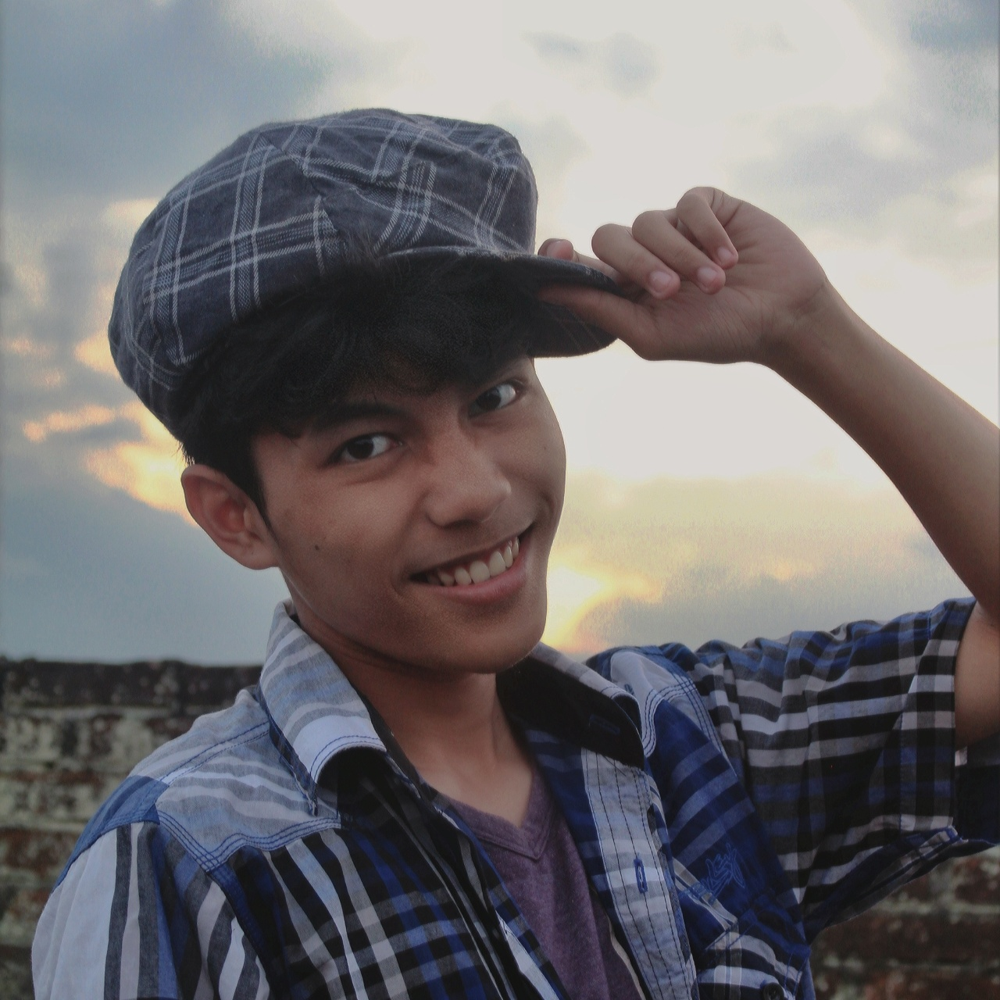

Backend Engineer | AI Researcher | Problem Solver
Hello! I'm Glenferdinza.
A student who study at Yogyakarta University State who passionate in backend engineer and AI enthusiast. I spend my days crafting efficient code and exploring the fascinating world of artificial intelligence.
With a background in Information Technology and a love for problem-solving, I've dedicated myself to creating robust systems and innovative solutions. When I'm not coding, you can find me reading tech blogs, experimenting with new technologies, or enjoying a good book.
My journey in tech began with a simple curiosity about how things work, which evolved into a deep passion for creating and improving digital experiences. I believe in continuous learning and pushing the boundaries of what's possible.